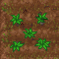

Hemp
| Hemp | |
|---|---|
General Information
| |
Type :
|
Crop |
Stack size:
|
50 |
Base Cost :
|
|
Source(s)
| |
Buy from :
|
Dig (T II) |
Sell to :
|
None |
| Farming | |
Study Information
| |
Study reward:
|
|
Decomposition Products
| |
| Acceleration powder, Acceleration extract | |
Technical Information
| |
Internal name:
|
hamp_crop |




Hemp growing in the garden.
Hemp is a form of crop which can be grown from hemp seeds in the garden below the workyard also known as the kitchen garden. Alternatively they can be purchased from Dig. Hemp is not an improvable crop. It does not have quality levels and cannot be improved with fertilizer. It can only be made to grow faster. See the page on farming for more information on how crops are grown and improved.
Recipe
| Empty garden bed | |
|---|---|
| Item Produced | Materials Required |
| 5-7× Hemp 2-4× Hemp seed ?× Crop waste |
4× Hemp seed |
Study
| Study table | |||
|---|---|---|---|
| Tech Points | Resources Required | Energy | Notes |
| 4× Faith 4× Science |
- |
Decomposes into: powder and essence | |
Crafting
| Church workbench | |
|---|---|
| Item Produced | Materials required |
| 5× Hemp rope |
4× Hemp |
| Organ Workbench | |
| Item Produced | Materials required |
| 10× Boost fertilizer I |
10× Peat 2× Sin Shard 2× Hemp |
| 10× Boost fertilizer II |
10× Peat 4× Sin Shard 3× Hemp |
Alchemy
Hemp can be decomposed to powder and extract at the Alchemy mill and any of the distillation cubes, respectively. Having unlocked Master of Alchemy produces one additional reagent at each workstation.
| Alchemy mill | |
|---|---|
| Item Produced | Materials required |
| 3× Acceleration powder |
1× Hemp |
| Distillation cube | |
| Item Produced | Materials required |
| 2× Acceleration extract |
1× Hemp |
| Distillation cube II | |
| Item Produced | Materials required |
| 3× Acceleration extract |
1× Hemp |
| |||||||||||||||||